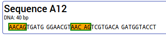
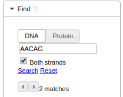

This page is part of the GeneWarrior Documentation. Go to the main site of GeneWarrior
Choose either DNA or Protein to search either in your DNA or protein sequences and alignments. Enter the sequence to
search for.
Ambigous nucleotides are allowed: AAYAA will find AACAA as well as AATAA.
For DNA sequences you can choose whether to search only in the upper strand or also in the lower (reverse
complement) strand.
Hit Enter or click on "Search".
Hits are highlighted and can be scrolled through using the arrow buttons. Click on "Reset" to remove the
highlighted hits.
